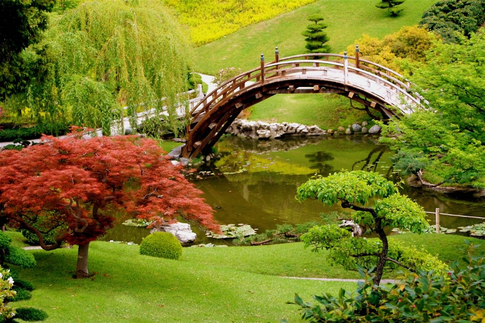
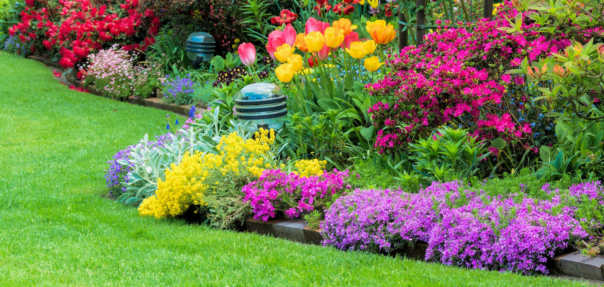
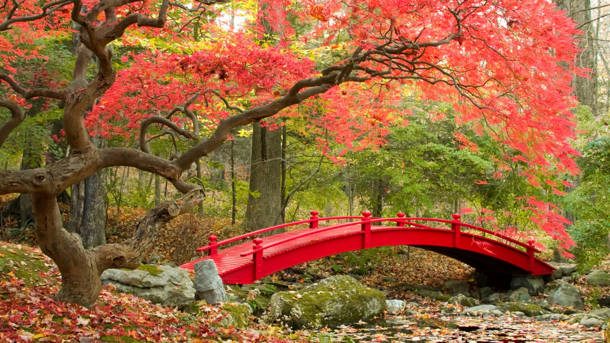
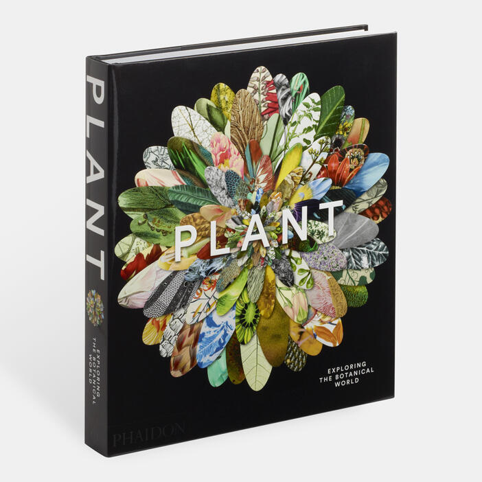
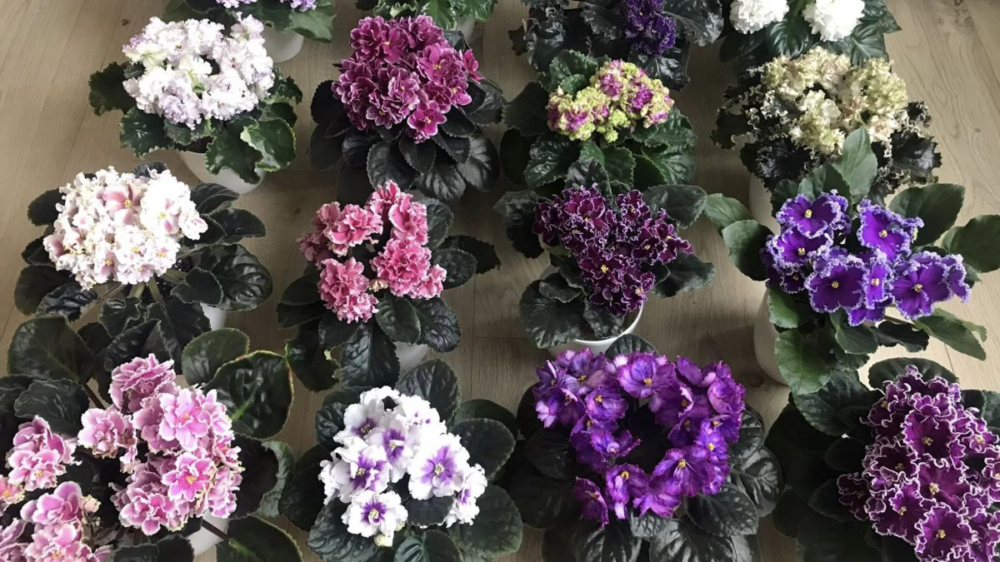
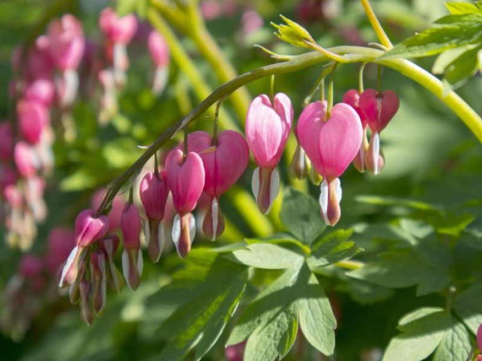

Замовити букет
Жодне свято, подія чи просто приємний момент не обходиться без квітів. Ми створимо для вас унікальний букет, враховуючи стиль, подію та навіть настрій. Подаруйте радість тим, кого цінуєте.
Записатися на екскурсію
Наші гіди допоможуть вам поринути в ботанічний світ із десятками видів рослин, чарівними ландшафтами та атмосферою спокою. Запишіться на віртуальну або фізичну екскурсію вже зараз!




Книга рослин
Наша енциклопедія включає понад 100 видів рослин із унікальними описами, корисними властивостями та цікавими фактами. Пізнавайте зелений світ разом з нами.
Відкрити книгуОстанні новини

Весняна виставка фіалок
З 10 по 20 квітня у нашому саду відбудеться виставка рідкісних фіалок.

Нові рослини у колекції
Ми додали понад 20 екзотичних рослин у тропічний павільйон.
Поширені запитання
Які години роботи саду?
Щодня з 9:00 до 19:00
Чи можна прийти з дітьми?
Так, у нас діє сімейний тариф та дитячі зони.
Чи працює кафе на території?
Так, на території є кафе з напоями та закусками.
Чи можна організувати фотосесію?
Так, але потрібно попередньо погодити дату з адміністрацією.
Чи є парковка?
Так, безкоштовна стоянка поруч із входом у сад.
Відгуки відвідувачів
Ірина
Неймовірно красиве місце. Ми з родиною неначе потрапили у казку!
Олександр
Дуже сподобалась екскурсія. Гід професійний виконував роботу і доброзичливо ставився до туристів.
Марія
Дякую за чудову атмосферу та квіти – все дуже стильно й душевно!
Про нас
Andromeda Garden — це не просто ботанічний сад. Це місце, де природа зустрічається з натхненням. Ми створили простір, який дарує спокій, естетику та цікаві знання про рослинний світ. У нас можна не лише милуватися унікальними видами квітів та дерев, а й дізнатися багато нового під час екскурсій та майстер-класів.
Наша команда дбає про кожну рослину та кожного відвідувача. Ми прагнемо зробити світ трохи зеленішим і щасливішим. Завітайте до нас і переконайтеся самі!